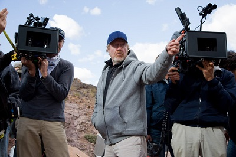
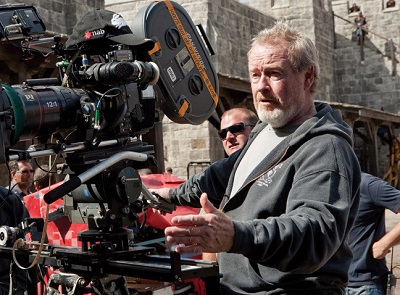

Redley Scott

Nostromo

Prometheus

Covenant

Xenomorph
Ridley Scott
Sir Ridley Scott (born 30 November 1937) is an English film director and producer. Following his commercial breakthrough with the science-fiction horror film Alien (1979), his best known works are the neo-noir dystopian science fiction film Blade Runner (1982), crime drama Thelma & Louise (1991), historical drama and Best Picture Oscar winner Gladiator (2000), war film Black Hawk Down (2001), crime thriller Hannibal (2001), biographical film American Gangster (2007), and science fiction films Prometheus (2012) and The Martian (2015).
Scott is known for his atmospheric, highly concentrated visual style. Though his films range widely in setting and period, they frequently showcase memorable imagery of urban environments, whether 2nd century Rome (Gladiator), 12th century Jerusalem (Kingdom of Heaven), Medieval England (Robin Hood), contemporary Mogadishu (Black Hawk Down), or the future cityscapes of Blade Runner. His films are also known for their strong female characters. Scott has been nominated for three Academy Awards for Directing (for Thelma & Louise, Gladiator and Black Hawk Down). In 1995, both Ridley and his brother Tony received the BAFTA Award for Outstanding British Contribution To Cinema. In 2003, Scott was knighted for his "services to the British film industry". In 2015, he was awarded an honorary doctorate by the Royal College of Art in London.
Early life and career
Scott was born in South Shields, County Durham, North East England,[8] to Elizabeth (Williams) and Colonel Francis Percy Scott. He was brought up in an army family, so for most of his early life, his father – an officer in the Royal Engineers – was absent. His elder brother, Frank, joined the British Merchant Navy when he was still young and the pair had little contact. During this time the family moved around, living in (among other areas) Cumberland in North West England, Wales and Germany. He had a younger brother, Tony, who also became a film director. After World War II, the Scott family moved back to their native North East, eventually settling on Greens Beck Road in Hartburn, County Durham, whose industrial landscape would later inspire similar scenes in Blade Runner. He studied at Grangefield Grammar School and West Hartlepool College of Art from 1954 to 1958, obtaining a diploma in design.
Scott went on to study at the Royal College of Art in London, contributing to college magazine ARK and helping to establish the college film department. For his final show, he made a black and white short film, Boy and Bicycle, starring both his younger brother and his father (the film was later released on the "Extras" section of The Duellists DVD). In February 1963 Scott was named in title credits as "Designer" for the BBC television programme Tonight, about the severe winter of 1963. After graduation in 1963, he secured a job as a trainee set designer with the BBC, leading to work on the popular television police series Z-Cars and science fiction series Out of the Unknown. He was originally assigned to design the second Doctor Who serial, The Daleks, which would have entailed realising the serial's eponymous alien creatures. However, shortly before Scott was due to start work, a schedule conflict meant he was replaced by Raymond Cusick. In 1965, he began directing episodes of television series for the BBC, only one of which, an episode of Adam Adamant Lives!, is available commercially.
In 1968, Ridley and Tony Scott founded Ridley Scott Associates (RSA), a film and commercial production company. Working alongside Alan Parker, Hugh Hudson and cinematographer Hugh Johnson, Ridley Scott made many commercials at RSA during the 1970s, including a notable 1973 Hovis advertisement, "Bike Round" (underscored by the slow movement of Symphony No. 9 rearranged for brass), set in the north of England but filmed in Gold Hill, Shaftesbury, Dorset. A nostalgia themed television advertisement that captured the public imagination, it was voted the UK's all-time favourite commercial in a 2006 poll. In the 1970s the Chanel No. 5 brand needed revitalisation having run the risk of being labelled as mass market and passé. Directed by Scott in the 1970s and 1980s, Chanel television commercials were inventive mini-films with production values of surreal fantasy and seduction, which "played on the same visual imagery, with the same silhouette of the bottle."
Five members of the Scott family are directors, and all have worked for RSA. His brother Tony was a successful film director whose career spanned more than two decades; his sons Jake and Luke are both acclaimed directors of commercials, as is his daughter, Jordan Scott. Jake and Jordan both work from Los Angeles; Luke is based in London. In 1995, Shepperton Studios was purchased by a consortium headed by Ridley and Tony Scott, which extensively renovated the studios while also expanding and improving its grounds.
Early films
Scott had originally planned next to adapt a version of Tristan and Iseult, but after seeing Star Wars, he became convinced of the potential of large scale, effects-driven films. He accepted the job of directing Alien, the 1979 horror/science-fiction film that would win him international success. Scott made the decision to switch Ellen Ripley from the standard male action hero to a heroine.Ripley (played by Sigourney Weaver), who appeared in the first four Alien films, would become a cinematic icon.The final scene of John Hurt's character has been named by a number of publications as one of the most memorable in cinematic history. Filmed at Shepperton Studios in England, Alien was the sixth highest-grossing film of 1979, earning over $104 million worldwide. Scott was involved in the 2003 restoration and re-release of the original film. In promotional interviews at the time, Scott indicated he had been in discussions to make a fifth film in the Alien franchise. However, in a 2006 interview, Scott remarked that he had been unhappy about Alien: The Director's Cut, feeling that the original was "pretty flawless" and that the additions were merely a marketing tool.Scott would later return to an Alien-related project when he directed Prometheus three decades after the original film's release. (See 2006 – present section, for more on Prometheus.)
Personal life
Ridley Scott was married to Felicity Heywood from 1964 to 1975. The couple had two sons, Jake and Luke, both of whom work as directors on Scott's production company, Ridley Scott Associates. Scott later married advertising executive Sandy Watson in 1979, with whom he had a daughter, Jordan Scott, and divorced in 1989.His current partner is the actress Giannina Facio, whom he has cast in all his films since White Squall except American Gangster and The Martian.He divides his time between homes in London, France and Los Angeles.
His eldest brother Frank died, aged 45, of skin cancer in 1980.His younger brother Tony, who was also his business partner in their company Scott Free, died on 19 August 2012 at the age of 68 after jumping from the Vincent Thomas Bridge which spans Los Angeles Harbor, after a long struggle with cancer. Before Tony's death, he and Ridley collaborated on a miniseries based on Robin Cook's novel, Coma for A&E. The two-part miniseries premiered on A&E on 3 September 2012, to mixed reviews.In 2013, Ridley stated that he is an atheist.
Ridley has dedicated several of his films in memory of his family: Blade Runner to his brother Frank, Black Hawk Down to his mother, and The Counselor and Exodus: Gods and Kings to his brother Tony. Ridley also paid tribute to his late brother Tony at the 2016 Golden Globes, after his film, The Martian, won Best Motion Picture – Musical or Comedy.
Approach and style
Russell Crowe commented, "I like being on Ridley's set because actors can perform and the focus is on the performers."Paul M. Sammon, in his book Future Noir: The Making of Blade Runner, commented in an interview with Brmovie.com that Scott's relationship with his actors has improved considerably over the years.More recently during the filming of Scott's 2012 film, Prometheus, Charlize Theron praised the director's willingness to listen to suggestions from the cast for improvements in the way their characters are portrayed on script. Theron worked alongside the writers and Scott to give more depth to her character during filming.
Scott's work is identified for its striking visuals, with heroines also a common theme.His visual style, incorporating a detailed approach to production design and innovative, atmospheric lighting, has been influential on a subsequent generation of filmmakers.Scott commonly uses slow pacing until the action sequences. Examples include Alien and Blade Runner; the LA Times critic Sheila Benson, for example, would call the latter "Blade Crawler" "because it's so damn slow". Another technique he employs is use of sound or music to build tension, as heard in Alien, with hissing steam, beeping computers and the noise of the machinery in the space ship. Scott claims to have an eidetic memory, which he says aids him in visualising and storyboarding the scenes in his films.
Scott has developed a method for filming intricate shots as swiftly as possible: "I like working, always, with a minimum of three cameras. So those 50 set-ups [a day] might only be 25 set-ups except I'm covering in the set-up. So you're finished. I mean, if you take a little bit more time to prep on three cameras, or if it's a big stunt, eleven cameras, and – whilst it may take 45 minutes to set up – then when you're ready you say 'Action!', and you do three takes, two takes and is everybody happy? You say, 'Yeah, that's it.' So you move on."
Artificial intelligence is a unifying theme throughout Scott's career as a director, particularly in Blade Runner, Alien, and Prometheus.The recent book The Culture and Philosophy of Ridley Scott identifies Alan Turing and John Searle, a professor at the University of California, as presenting relevant models of testing artificial intelligence known as the Turing test and the Chinese Room Thought Experiment, respectively, in the chapter titled "What's Wrong with Building Replicants," which has been a recurring theme for many of Scott's films.The chapter titled "Artificial Intelligence in Blade Runner, Alien, and Prometheus," concludes by citing the writings of John Stuart Mill in the context of Scott's Nexus-6 Replicants in Blade Runner (Rutger Hauer), the android Ash (Ian Holm) in Alien, and the android David (Michael Fassbender) in Prometheus, where Mill is applied to assert that measures and tests of intelligence must also assess actions and moral behaviour in androids to effectively address the themes which Scott explores in these films.